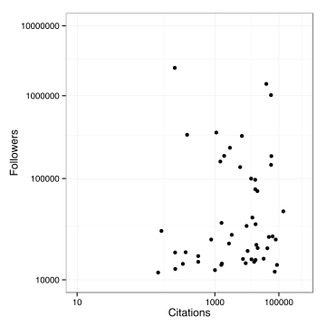

Interactive charts in R
Ben Moore (@benjaminlmoore)
May meeting 2015
Slides online at: blm.io/talks/edinbr_may
But first

Talk overview
Why interactive?
How javascript plots work
An easy way to interactive plots in R
Glueing R and js via
htmlwidgetsBeyond just plots with
blockspring
Why interactive: labels
Source: What are the most overrated films? on blm.io.
Why interactive: zoom, show/hide
Source: UK general election polls in rCharts and shiny on blm.io.
Why interactive: subplots
Source: r/QTLcharts example by @kwbroman.
Why interactive: networks
Source: htmlwidgets example by Christopher Gandrud.
Ok I'm convinced, how can I make these?

R background
"Hadley"-verse
Robust, powerful libraries with strong theoretical underpinnings:
ggplot2:: Grammar of graphics (Leland Wilkinson)dplyr:: Grammar of data manipulation
"Ramnath"-verse
Neat hacks that get R talking to various javascript libraries:
rCharts:: js plots from lattice-like syntaxslidify:: HTML/JS/CSS presentations from RMarkdown
Interactive charts
How we will be doing it (?):
R
▼
ggvis (Rstudio)
▼
Vega
▼
D3.js
But currently:
R
▼
rCharts
(And new: packages build with htmlwidgets)
▼
[ dimple.js, highcharts, NVD3, ... ]
▼
D3.js
D3.js
Handles data mapping (often JSON) + acts like jQuery for SVG elements.
Very powerful but low-level — basic graphs use the same few elements so no need to reinvent wheel for these.
Loads of js plotting libraries
dimple, NVD3, polycharts, highcharts, ...
- Uniform (lattice-style) plotting interface for each of these (and more!) straight from R
Example: static
# load data
d <- read.csv2("Twitter50.txt", sep="\t")
library("ggplot2")
# plot with ggplot
ggplot(d, aes(x=Citations, y=Followers)) +
geom_point() + theme_bw() +
# axis tweaks
coord_trans(x="log10", y="log10") +
scale_x_log10(limits=c(10, 1e6)) +
scale_y_log10(limits=c(1e4, 1e7))
# save to file from device
ggsave(filename="sciTwitter.svg",
width=5, height=5)
(Data from @biomickwatson)

Example: interactive
# load data
d <- read.csv2("Twitter50.txt", sep="\t")
library("rCharts")
# dplot (dimple.js)
i <- dPlot(Followers ~ Citations,
data=d, type="bubble",
groups="Name", height=480, width=520)
# axis tweaks
i$yAxis(type = "addLogAxis", overrideMin=1e4)
i$xAxis(type = "addLogAxis", overrideMin=10)
# publish as gist
i$publish()
rCharts
✓ Quick, easy intro to intractive plots for the web
✓ Range of libraries to choose from
✓ Still evolving, new libraries added
✗ Probably will need to refer to js lib docs for customisation
✗ Sooner or later will need to edit the js source
...more recently people are using htmlwidgets which helps address some of these issues.
htmlwidgets
Framework for glueing together R and external web libraries (e.g. plotting libraries)
Not an actual package you're likely to use but underlies new waves of R packages tied to specific javascript libraries
- Examples: rcdimple, leaflet, datatables, dygraphs
It enforces consistency allowing packages to be used in R / RStudio, in RMarkdown documents and in Shiny web applications!
Kent Russell @timelyportfolio is currently building one widget per week (!) on his site: buildingwidgets.com.
leaflet.js via leaflet R package
Leaflet example code snippet
library("magrittr")
library("leaflet")
leaflet(data=accidents) %>%
addTiles(urlTemplate="http://openmapsurfer.uni-hd.de/tiles/roadsg/x={x}&y={y}&z={z}") %>%
addTiles('http://{s}.tile.openstreetmap.se/hydda/roads_and_labels/{z}/{x}/{y}.png',
attribution='© OpenStreetMap') %>%
setView(lng=-3.19, lat=55.95, zoom=13) %>%
addCircleMarkers(~long, ~lat, radius=~(no_vehicle+.8)**1.5, fillOpacity=.15,
color=NA, popup=strs, weight=2) %>%
addControl(html=label_html, position="bottomright")
Works in RStudio viewer, external web browser and (with some tweaks) in a shiny app...
WebGL via three.js: 2013 flights from Edinburgh
If we can link R to online plotting libraries...
...we can link anything!
Makes available a huge community-built library of functions with bindings in variety of languages (including R). Essentially huge API wrapper for: weather services, news, social media, plotting libraries...
library('blockspring')
nyt_ed <- blockspringRunParsed("nyt-article-search",
list( "query" = "Edinburgh",
"nyt_article_key" = private_key ))$params
"Edinburgh" NYT search results
Edinburgh
Articles, photos and video about Edinburgh from The New York Times, including hotel, restaurant and attraction information with reader reviews and advice on where to stay, where to eat and what to do.
Head of R.B.S. Spinoff, Williams & Glyn, to Step Down
John Maltby will serve as an adviser to a consortium of investors who participated in a 2013 bond offering to help finance the spinoff.
Edinburgh International Festival, Under New Director, Sets Lineup
The Edinburgh International Festival in August will be the first under the direction of Fergus Linehan.
Philip, Duke of Edinburgh
News about Duke of Edinburgh Philip, including commentary and archival articles published in The New York Times.
A Dance Takes Shape From Pringle of Scotland's Archives
The fashion house shares a video, choreographed by Michael Clark Company in celebration of the label’s 200th birthday.
Sacheverell Sitwell's Bright Pageant of Edinburgh
THE history of Edinburgh is violent, tragic, romantic, picturesque and everything by extremes. It was here that Malcolm Canmore brought his English bride, Margaret, after the murder of Duncan and the death of Macbeth in the eleventh century.
Verisk Analytics Agrees to Buy Scottish Energy Research Firm
The Jersey City-based company said it would pay about $2.8 billion for Wood Mackenzie of Edinburgh.
1890: Forth Bridge Is Completed
Highlights from the International Herald Tribune archives: Forth Bridge finished construction in 1890.
Summary
Interactive charts can be a powerful way of presenting and exploring data
Charts with interactivity are not difficult to make, and definitely not only the domain of web developers
2015 is "the year of the htmwidget" — expect ever-improving R solutions to interactive plotting in the near future...
Thanks for listening
People who've helped me out or I've stolen code from:
@ramnath_vaidya (rCharts, slidify, htmlwidgets), @timelyportfolio (htmlwidgets), @kwbroman (r/qtlcharts), @hadley_wickham (dplyr, ggplot2, devtools), @jcheng (leaflet, shiny examples), StackOverflow, @mbostock (d3.js)
These slides at blm.io/talks/edinbr_may/; more examples:
blm.io/blog